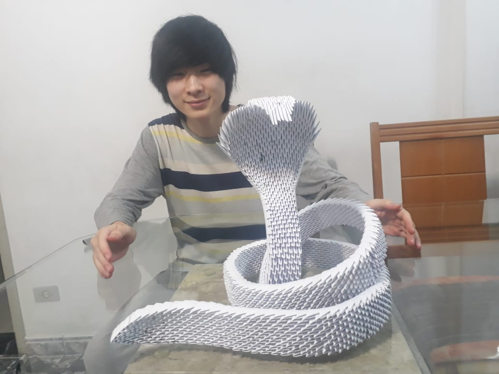

Sobre o autor - Guilherme Aoki Eguchi

Descobri o Origami desde pequeno, quando eu ainda estava no ensino fundamental 1, minha mãe sempre gostava de fazer origamis quando saíamos para comer. Ela utilizava os papéis que eles deixavam embaixo das bandejas de comidas. O que ela mais fazia era o tsuru e o balão, eu adorava brincar com os dois. Desde aquele momento, minha mãe me ensinou a fazer vários origamis como: tsuru, barquinho, aviãzinho e até um cubo composto por várias peças. Sempre foi algo que me fez conectar com as minhas origens japonesas e até hoje gosto de fazer origamis para me distrair e praticar um hobby tão interessante. Fico pensando como as pessoas conseguiram pensar em algo tão criativo e bonito utilizando apenas a dobradura de uma folha de papel.